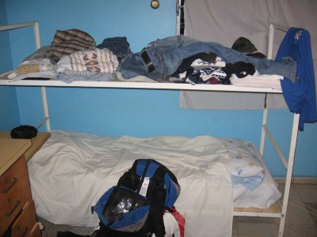
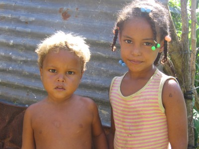
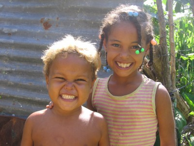

November 13th- Santo Domingo, Dominican Republic.It has been a great while since I’ve written on Backpacker Acker. My appreciation to those who still visit the site despite my lack of updates. I had high hopes for this website and still do, and hope that every update continues to motivate, entertain, and most importantly, inform my readers of the situation outside his or her cubicle, office, classroom, or home. Globalization has its many drawbacks, but being able to tell all of my friends, family, and fellow travelers I have met about what I am doing across oceans, in different countries, is amazing.My current travels have taken me to a poor island with amazing people in the Caribbean. I will admit I have gone on a lot of trips for myself, Australia, Hawaii, Europe, Costa Rica, various islands around the world come to mind. However, this trip will hopefully not follow that same trend. Before jumping into corny jokes, gross generalizations, and smart-ass comments, let me give those who don’t know a background of what I am doing, where I am, and who I’m praying to (here’s a hint…he’s got long hair, a beard, and we share the same initials).Let me also preface this article by saying I haven’t had an alcoholic drink in over 9 days. Those who are followers of the website know this is a rarity. Don’t be alarmed though, I’ve taken a liking to rubber cement, so this should still be an entertaining article. This will also not be any short, off-the-top-of-my-head article, so if you are looking for a quick fix, and a few laughs, stop reading now. However, if you are bored at work, looking for a way to kill 20 minutes and wish you were me for 20 minutes, read on mi amigo. You are about to enter the world of Backpacker Acker.I am volunteering for the International Non-Profit “Foundation for Peace” in Santo Domingo, Dominican Republic. FFP works in various communities through out the Dominican Republic with such projects as building churches, schools, and most importantly, (my focus) potable water systems. I am staying in a house with 4 staff members from the United States, three women ages 24, 25, and 27, along with one other guy who is 25 from Central New Jersey. Also living in the house are 5 Dominican women who cook and work in the school located in the back of the house where 100 students attend class each day. The students are all between the ages of 5 and 7, and they are wild little people. My roommate’s name is Isidro, he is of Haitian descent but was born here in the Dominican and speaks only Spanish. I will try and post of a picture of him soon, but here is a picture of my bed/room.The house is located in a blue-collar section of Santo Domingo, aka, I don’t walk alone at night anywhere because I’ll get jacked. During the day it is safe to roam the city. Our house has gates which are locked every night and there are bars on every window and door. Dominicans are very close with their families, and there are always people coming and going from the house visiting friends, family who live/work in the house. I’m supposed to go lift weights with one of them on Thursday, it costs a whopping 20 pesos to work out for one hour (about 60 cents).We eat mostly rice (ok all rice) and beans, along with whatever else the girls cook for us. The only deal is we have to do all the dishes and put all the food away after each meal. There is no hot water so every shower is a damn cold experience. At night, it barely cools down to around 85 degrees so each person has a personal fan that blows right on our faces all night. The problem lies in that rolling blackouts in this country happen every day. Today, we didn’t have power for a solid 12 hours straight, no toilets can flush so I leave the imagination to you all. Usually we have power around 16 hours a day. There was a cockroach in my bed two nights ago, roughly the size of my pinkie. I smashed him to smitherines and laid him out in the hallway as a warning to his family that Backpacker Acker+cockroaches=byebye cockroaches. Somebody make up a definition for smitherines and put it on Wikipedia. I am blacklisted from Wikipedia for repeatedly entering “bumbardment” as the act of street bums begging for money all at once. Apparently you must site sources, go figure.The first couple days were uneventful, we visited various villages where past projects took place to get an idea of what kind of work the organization does. Here is a photo of a boy named Jayson, standing in front of his shack. This photo makes me sad, cant really tell ya why…except if you saw the shack he was living in. damn.Tomorrow, I will go to the Haiti/Dominican Republic border with an Army escort to pass out rice to people who have been forced from their homes by the Tropical Storm Noel that passed through. They haven’t had power in 3 weeks. They are all Haitians that speak Creole. Will be back on Saturday, like to get emails from everyone. I have a lot more to write so check again next weekend.Take care, be safe, and I leave you with one more photo.From a beautiful island with even more beautiful people,Backpacker AckerThen I made them smile…And if that don’t make you smile…well there’s not much more Backpacker Acker can do for ya.Until next time.Paz

|
You are using an insecure version of your web browser. Please update your browser!
Using an outdated browser makes your computer unsafe. For a safer, faster, more enjoyable user experience, please update your browser today or try a newer browser.
|
{kind=link}
{kind=link}
{kind=link}
{kind=link}
nice.
(one word complement).
jared,
i love this website. keep posting stories…so that others may live vicariously through you…sounds like jesus…
oh and am so happy to see that picture of the blond boy with the cheeks and smile…
jared,
we just got back from working at la javilla and spent the whole time chasing after these kids. their names are guimi and rosa. guimi was our mascot…the fiestiest little devil ever. love this picture, if you don’t mind i would like to send it to the rest of our group! they didn’t believe me when i told them the first time i met him he had blond hair.
hope you’re well!
Mihee-
Good to hear from you, of course you can use/send that photo. I loved those little guys. hope the trip went well and everybody down there is doing fine as well.
Im heading to South Korea to teach english soon, ill be posting on here quite a bit.
take care
nice man ! I also travelled in whole Dominican Republic on my motorbike 🙂